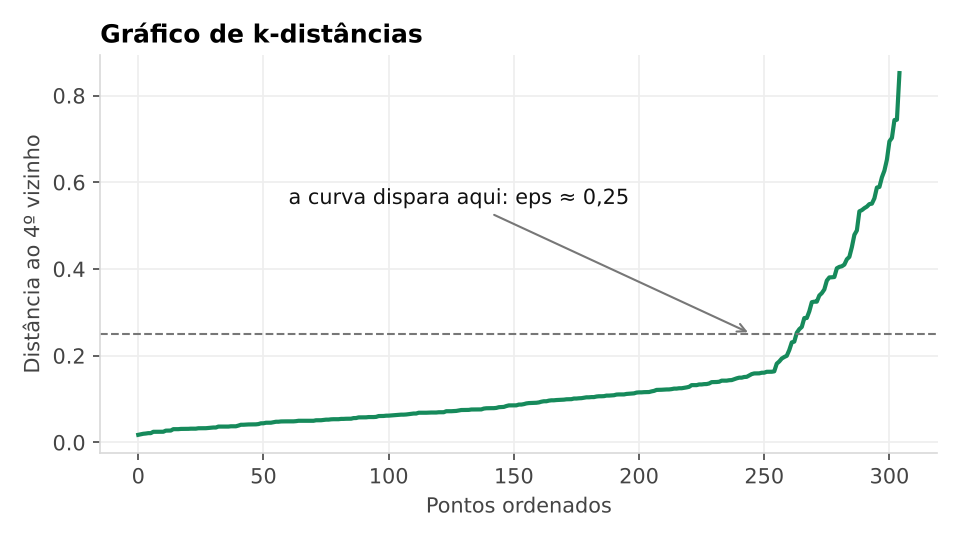
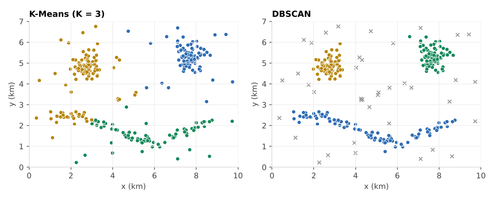

DBSCAN: encontrando regiões de ocorrências
Vamos pegar o registro de ocorrências de uma cidade inventada e deixar o computador descobrir onde elas se concentram, sem dizer quantas regiões existem e deixando de fora os casos isolados.
Objetivos
Ao final desta aula você será capaz de:
- explicar com suas palavras o que o DBSCAN faz e no que ele é diferente do K-Means;
- diferenciar ponto central, ponto de borda e ruído;
- escolher o
epse omin_samples; - aplicar o DBSCAN no Python e comparar o resultado com o do K-Means.
1. A ideia
Na aula passada o K-Means separou clientes em grupos. Ele funciona bem, mas tem dois limites. Primeiro, você precisa dizer quantos grupos quer. Segundo, ele obriga todo mundo a entrar em algum grupo, até aquele ponto que não tem nada a ver com os outros. E ele só se dá bem com grupos “redondos”, ao redor de um centro.
Agora imagine um mapa com as ocorrências de uma cidade. Algumas se juntam em certas regiões. Outras acontecem sozinhas, em qualquer lugar. Se quisermos achar as regiões, os pontos soltos só atrapalham.
O DBSCAN (Density-Based Spatial Clustering of Applications with Noise) resolve isso olhando a densidade: um grupo é uma região onde tem muitos pontos próximos uns dos outros. Quem está sozinho fica de fora, marcado como ruído, com o rótulo -1.
Ele usa só dois ajustes:
eps: o raio da vizinhança, ou seja, até que distância alguém conta como “vizinho”;min_samples: quantos vizinhos são necessários para uma região ser considerada densa.
| K-Means | DBSCAN | |
|---|---|---|
| Número de grupos | Você precisa definir (K) | Descoberto sozinho |
| Baseado em | Distância até o centro do grupo | Densidade de pontos |
| Formato dos grupos | Redondo | Qualquer formato |
| Pontos isolados (outliers) | Entram em algum grupo e puxam o centro | Ficam de fora, como ruído |
| Densidades diferentes | Tem problemas | Também tem problemas (o eps é um só) |
DBSCAN = um grupo é onde tem gente junta. Quem está sozinho fica de fora.
2. Os três tipos de ponto
Para cada ponto, o DBSCAN desenha um círculo de raio eps ao redor dele e conta quantos pontos cabem dentro (contando o próprio ponto). Com isso, todo ponto cai em uma de três categorias:
min_samples = 5. Os círculos tracejados têm o tamanho do eps.| Tipo | Como reconhecer | O que acontece |
|---|---|---|
| Central (core) | Tem min_samples ou mais pontos dentro do raio. | Faz parte do miolo do grupo. |
| Borda (border) | Tem menos vizinhos que o mínimo, mas está no raio de um ponto central. | Entra no grupo, na beirada. |
| Ruído (noise) | Poucos vizinhos e nenhum ponto central por perto. | Fica de fora. Rótulo -1. |
O algoritmo, em passos:
- Defina
epsemin_samples. - Para cada ponto, conte os vizinhos dentro do raio
eps. - Quem tem
min_samplesou mais vira ponto central. - Pontos centrais que estão perto uns dos outros se conectam e formam um grupo.
- Pontos que não são centrais, mas estão no raio de um central, entram no grupo como borda.
- O que sobrou é ruído, rótulo
-1.
3. eps e min_samples
Pense em uma festa: as pessoas formam rodas de conversa e algumas ficam sozinhas. Para decidir se alguém faz parte de uma roda, você precisa saber o quão perto ela precisa estar (eps) e quantas pessoas formam uma roda (min_samples).
| Ajuste | O que define | Se for muito pequeno | Se for muito grande |
|---|---|---|---|
eps | Raio para considerar alguém vizinho | Quase tudo vira ruído e os grupos se quebram | Os grupos se fundem e tudo vira um só |
min_samples | Mínimo de vizinhos para ser ponto central | Muitos grupinhos pequenos e ruidosos | Grupos de verdade somem (viram ruído) |
Como escolher o eps: use o gráfico de k-distâncias. Para cada ponto, calcule a distância até o seu k-ésimo vizinho mais próximo (com k = min_samples), coloque tudo em ordem e olhe a curva. O ponto onde ela começa a disparar, o “joelho”, é um bom eps. Você vai fazer esse gráfico no passo a passo.
Como escolher o min_samples: uma regra prática é 2 × número de colunas. Nossos dados têm 2 colunas de posição (x_km e y_km), então começamos com min_samples = 4.
Teste valores diferentes e confira se o resultado faz sentido. O próximo mapa foi feito para isso.
4. Os dados
Usamos o arquivo crimes.csv, com 305 ocorrências de uma cidade inventada. Os dados foram criados só para esta aula e não representam nenhum lugar real. Cada linha é uma ocorrência. Veja as primeiras:
| ocorrencia_id | tipo | hora | x_km | y_km |
|---|---|---|---|---|
| 1 | roubo | 21 | 7.43 | 4.84 |
| 2 | roubo | 11 | 5.10 | 3.59 |
| 3 | roubo | 11 | 2.19 | 4.82 |
| 4 | roubo | 19 | 7.54 | 5.54 |
| 5 | outros | 12 | 2.84 | 4.39 |
| 6 | furto | 14 | 2.48 | 4.63 |
| 7 | vandalismo | 16 | 2.80 | 5.09 |
| 8 | furto | 17 | 5.33 | 1.34 |
O que significa cada coluna:
| Coluna | O que é | Exemplo |
|---|---|---|
| ocorrencia_id | Número da ocorrência (1, 2, 3…). | 1 |
| tipo | O que aconteceu: furto, roubo, vandalismo ou outros. | roubo |
| hora | Hora do dia em que aconteceu (0 a 23). | 21 |
| x_km | Posição no mapa, em km, medida da esquerda para a direita. | 7.43 |
| y_km | Posição no mapa, em km, medida de baixo para cima. | 4.84 |
Num caso real, a posição viria de latitude e longitude. Aqui usamos km em um mapa de 10 por 7 para ficar mais fácil de enxergar.
5. Mapa interativo
Cada ponto é uma ocorrência. Mexa nos controles e veja o que muda. Passe o mouse (ou toque) em um ponto para ver quem são os vizinhos dele e se ele é central, de borda ou ruído. Os nomes “Centro”, “Terminal” e “Orla do rio” são só do mapa inventado.
Experimente:
- Clique em eps pequeno. O que acontece com os grupos e com o ruído?
- Clique em eps grande. Quantos grupos sobram?
- Volte para o eps bom e suba o
min_samplesaté 12. O que acontece com as regiões menos densas? - Ative “Mostrar o tipo de cada ponto” e passe o mouse em um ponto da beirada de um grupo.
- Troque para K-Means com K = 3. A região do rio é cortada em duas partes, e uma delas (30 ocorrências) acaba no mesmo grupo do Centro. Os pontos isolados também entram nos grupos.
6. Passo a passo
O código abaixo é o mesmo do notebook. Você pode ir copiando célula por célula no Google Colab, ou abrir o notebook direto lá (botão no fim da página).
Importar as bibliotecas
pandas mexe com tabelas, matplotlib faz os gráficos e o scikit-learn traz o DBSCAN, o KMeans e o NearestNeighbors (usado para achar os vizinhos mais próximos).
# 1. Importar bibliotecas
import pandas as pd
import matplotlib.pyplot as plt
from sklearn.cluster import DBSCAN, KMeans
from sklearn.neighbors import NearestNeighbors
from sklearn.preprocessing import StandardScaler
from google.colab import filesCarregar o arquivo
O files.upload() abre um botão para você escolher o crimes.csv no seu computador. Depois o read_csv lê o arquivo em uma tabela chamada df.
# 2. Enviar o arquivo crimes.csv
files.upload()
df = pd.read_csv("crimes.csv")
df.head()Apague as linhas from google.colab import files e files.upload() e deixe o crimes.csv na mesma pasta do notebook.
Olhar os pontos
Antes de qualquer modelo, vale ver os dados. Este gráfico mostra todas as ocorrências em cinza, sem grupo nenhum. Dá para perceber algumas regiões mais cheias?
# 3. Olhar as ocorrências no mapa (ainda sem grupos)
plt.scatter(df["x_km"], df["y_km"], s=20, color="gray")
plt.xlabel("x (km)")
plt.ylabel("y (km)")
plt.title("Ocorrências registradas")
plt.show()Padronizar os dados
O eps é uma distância. Se as colunas estivessem em escalas muito diferentes (reais de um lado, quantidade do outro, por exemplo), uma delas dominaria a conta de quem é vizinho de quem. O StandardScaler coloca as colunas na mesma escala. Aqui as duas já estão em km, mas padronizar é um hábito que vale manter. Por isso o eps que vamos usar (0,25) está na escala padronizada, não em km.
# 4. Padronizar as coordenadas (o eps é uma distância)
X = StandardScaler().fit_transform(df[["x_km", "y_km"]])Escolher o eps
Usamos o NearestNeighbors para achar, para cada ponto, a distância até o 4º vizinho mais próximo (o 4 vem do min_samples). Ordenamos essas distâncias e desenhamos a curva.
# 5. Escolher o eps: gráfico de k-distâncias
# 2 colunas -> min_samples = 4, então olhamos o 4º vizinho mais próximo
vizinhos = NearestNeighbors(n_neighbors=4).fit(X)
distancias, _ = vizinhos.kneighbors(X)
k_dist = sorted(distancias[:, -1])
plt.plot(k_dist)
plt.xlabel("Pontos ordenados")
plt.ylabel("Distância ao 4º vizinho")
plt.title("Gráfico de k-distâncias")
plt.show()
eps = 0,25.Aplicar o DBSCAN
Criamos o modelo com os dois ajustes e pedimos para ele agrupar. O fit_predict devolve o grupo de cada ocorrência (0, 1, 2…) ou -1 para ruído. Note que não dissemos quantos grupos queremos.
# 6. Aplicar o DBSCAN
modelo = DBSCAN(eps=0.25, min_samples=4)
df["dbscan"] = modelo.fit_predict(X)
# -1 = ruído (não entrou em nenhum grupo)
print(df["dbscan"].value_counts().sort_index())Resultado:
| dbscan | ocorrências |
|---|---|
| -1 (ruído) | 39 |
| 0 | 80 |
| 1 | 87 |
| 2 | 99 |
Ele achou três grupos sozinho, e 39 ocorrências ficaram de fora como ruído.
Ver os grupos
Pintamos cada grupo de uma cor e deixamos o ruído em cinza, com um “x”.
# 7. Visualizar os grupos (ruído em cinza)
ruido = df["dbscan"] == -1
plt.scatter(df.loc[~ruido, "x_km"], df.loc[~ruido, "y_km"],
c=df.loc[~ruido, "dbscan"], cmap="viridis", s=25)
plt.scatter(df.loc[ruido, "x_km"], df.loc[ruido, "y_km"],
c="lightgray", marker="x", s=25, label="ruído")
plt.xlabel("x (km)")
plt.ylabel("y (km)")
plt.title("Regiões encontradas pelo DBSCAN")
plt.legend()
plt.show()Testar outros eps
O resultado depende muito do eps. Este laço testa quatro valores e conta grupos e ruído:
# 8. Testar outros valores de eps
for eps in [0.05, 0.1, 0.25, 0.6]:
rotulos = DBSCAN(eps=eps, min_samples=4).fit_predict(X)
grupos = len(set(rotulos)) - (1 if -1 in rotulos else 0)
print(f"eps={eps}: {grupos} grupos, {(rotulos == -1).sum()} pontos de ruído")Resultado:
| eps | grupos | ruído |
|---|---|---|
| 0,05 | 14 | 200 |
| 0,1 | 11 | 95 |
| 0,25 | 3 | 39 |
| 0,6 | 1 | 1 |
Com 0,05 o eps é pequeno demais: as regiões se quebram e quase tudo vira ruído. Com 0,6 é grande demais: tudo se junta em um grupo só. Entre os dois está o valor que faz sentido.
Interpretar as regiões
O DBSCAN só entrega números. Para dar sentido, olhamos o que tem dentro de cada grupo (deixando o ruído de fora): quantas ocorrências, a hora média e o tipo mais comum.
# 9. Interpretar: o que tem em cada região?
regioes = df[df["dbscan"] != -1]
regioes.groupby("dbscan").agg(
ocorrencias=("ocorrencia_id", "count"),
hora_media=("hora", "mean"),
tipo_mais_comum=("tipo", lambda t: t.mode()[0])).round(1)Resultado:
| dbscan | ocorrências | hora_media | tipo_mais_comum |
|---|---|---|---|
| 0 | 80 | 17,7 | roubo |
| 1 | 87 | 14,0 | furto |
| 2 | 99 | 20,1 | vandalismo |
Comparar com o K-Means
Agora rodamos o K-Means com K = 3 nos mesmos dados e colocamos os dois lado a lado. O crosstab no final mostra, para cada grupo do DBSCAN, onde seus pontos caíram no K-Means.
# 10. Comparar com o K-Means (K = 3)
df["kmeans"] = KMeans(n_clusters=3, random_state=42, n_init=10).fit_predict(X)
fig, eixos = plt.subplots(1, 2, figsize=(11, 4))
eixos[0].scatter(df["x_km"], df["y_km"], c=df["kmeans"], cmap="viridis", s=25)
eixos[0].set_title("K-Means (K = 3)")
eixos[1].scatter(df.loc[~ruido, "x_km"], df.loc[~ruido, "y_km"],
c=df.loc[~ruido, "dbscan"], cmap="viridis", s=25)
eixos[1].scatter(df.loc[ruido, "x_km"], df.loc[ruido, "y_km"],
c="lightgray", marker="x", s=25)
eixos[1].set_title("DBSCAN")
plt.show()# Quem caiu em cada grupo do K-Means?
pd.crosstab(df["dbscan"], df["kmeans"])
Resultado do crosstab:
| dbscan \ kmeans | 0 | 1 | 2 |
|---|---|---|---|
| -1 (ruído) | 10 | 18 | 11 |
| 0 | 0 | 0 | 80 |
| 1 | 0 | 87 | 0 |
| 2 | 69 | 30 | 0 |
Repare que o grupo do DBSCAN com a região do rio (99 ocorrências) foi dividido em dois pelo K-Means (69 e 30), e a parte menor ficou junto com o Centro. A linha do ruído mostra que o K-Means distribuiu os pontos isolados entre os grupos.
7. Lendo o resultado
Olhando a posição, a hora e o tipo de cada região, dá para dar um nome para elas e pensar em uma ação:
| Região | Ocorrências | Como é | O que fazer |
|---|---|---|---|
| Orla do rio | 99 | Mais vandalismos, em média às 20h (à noite). | Iluminar a orla e fazer rondas noturnas. |
| Centro | 87 | Mais furtos, em média às 14h (à tarde). | Reforçar a ronda a pé no horário comercial e orientar o comércio. |
| Terminal | 80 | Mais roubos, em média às 18h (no fim da tarde). | Mais policiamento e iluminação perto do terminal, no horário de saída do trabalho. |
Os 39 pontos de ruído não são “erro”. São ocorrências isoladas, que não formam região. Em alguns problemas, como fraude bancária, o ruído é justamente a parte mais interessante.
Em outra versão da biblioteca, a região do Terminal pode sair como grupo 1 em vez de 0. Não decore o número: olhe a posição e a tabela para saber quem é quem.
E qual abordagem foi melhor? Depende do que você precisa:
| Vantagem | Desvantagem | |
|---|---|---|
| DBSCAN | Acha outliers e formatos irregulares. Não precisa definir K. | Sensível ao eps e ao min_samples. Sofre com densidades muito diferentes. |
| K-Means | Simples, rápido e fácil de interpretar (centros). | Precisa definir K. Grupos redondos. Outliers puxam os centros. |
Neste mapa, o DBSCAN foi melhor: as regiões têm formatos diferentes, e há pontos isolados que não pertencem a nenhuma delas. Se os grupos fossem bolas bem separadas e sem ruído, o K-Means resolveria igualmente bem e de forma mais simples.
8. Onde usar e limites
O DBSCAN é útil quando queremos achar padrões de formato irregular e detectar casos fora do padrão:
- Fraudes bancárias: transações atípicas aparecem como ruído.
- Tráfego urbano: áreas com muitos veículos.
- Pontos críticos de crimes: regiões de risco no mapa, como fizemos na aula.
- Clientes: grupos com hábitos parecidos, deixando de fora os muito diferentes.
Mas ele também tem limites. O DBSCAN pode ir mal quando:
- as densidades são muito diferentes. Como o
epsé um só para todos os dados, um valor que serve para a região cheia não serve para a região mais espalhada (para isso existem variações, como o HDBSCAN); - os dados não foram padronizados, e uma coluna domina a distância;
- há muitas colunas. Em muitas dimensões, as distâncias ficam parecidas e a ideia de “perto” perde sentido;
- o
epsou omin_samplesestão mal ajustados, como você viu no mapa.
9. Exercícios
Exercícios de fixação
- Marque V ou F:
- ( ) O DBSCAN precisa que o número de clusters seja definido antes.
- ( ) Pontos de ruído recebem o rótulo
-1. - ( ) Um
epsmuito grande tende a juntar tudo em um cluster. - ( ) Um ponto de borda tem pelo menos
min_samplesvizinhos.
- Com
eps = 2emin_samples = 3(contando o próprio ponto), o ponto A tem 4 pontos a menos de 2 unidades de distância. A é central, de borda ou ruído? Justifique. - Complete:
modelo = DBSCAN(eps=____, min_samples=____)para dados com 2 colunas, sabendo que o joelho do gráfico de k-distâncias ficou em 0,4. - Você rodou o DBSCAN e 70% dos pontos viraram ruído. O que provavelmente está errado e o que você ajustaria?
- Dê um exemplo de situação em que você usaria DBSCAN em vez de K-Means e explique por quê.
Atividade prática
Em grupos de 3 a 4 pessoas, implementem o DBSCAN e o K-Means no mesmo conjunto de dados. Podem usar o crimes.csv desta aula ou baixar outro conjunto de dados.
- Carreguem o conjunto de dados.
- Apliquem o DBSCAN e ajustem os hiperparâmetros (
epsemin_samples). - Comparem com os resultados do K-Means e digam qual abordagem funcionou melhor para o conjunto escolhido.
Respondam também:
- Expliquem como o DBSCAN define se um ponto pertence a um cluster ou se é um outlier.
- Qual a diferença entre um Core Point, um Border Point e um Noise Point?
- Se o
epsfor muito grande, o que acontece com os clusters gerados? - Quais são as principais vantagens e desvantagens do DBSCAN em relação ao K-Means?
- Em quais tipos de conjuntos de dados o DBSCAN pode falhar?
Ao terminar, enviem o notebook (.ipynb) pelo AVA.
Baixar arquivos
Notebook da aula
dbscan_crimes.ipynb tem todo o código acima, pronto para rodar.
Dados de ocorrências
crimes.csv com 305 linhas de uma cidade inventada. Você vai precisar dele quando o notebook pedir o upload.